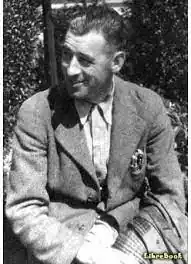

Ерік Френк Рассел — англійський письменник-фантаст, творив у жанрі наукової фантастики протягом майже трьох десятків років (з кінця 1930-х рр. до середини 1960-х рр.).
Народився 6 січня 1905 року в Сендхерсті (графство Саррей, Англія). Його батько був військовим, працював інструктором у військовій академії, періодично переїжджаючи за службовими потребами, так Ерік у дитинстві разом з родиною провів кілька років у Єгипті й Судані, а освіту отримав у приватних школах. У коледжі Расселл вивчав хімію, фізику, кристалографію, вивчившись в результаті на інженера. Згодом він працював оператором на телефонній станції, клерком в урядовій установі, технічним представником Ліверпульської сталеливарної компанії.
Здавалося б, йому заготоване розмірене життя, спокійний і врівноважений англієць заводить родину — в 1930 році він одружився з медсестрою Еллен Вен (Ellan When), а в 1934 році в них народилась дочка Еріка. Але в середині 1930-х рр. Расселл став одним із активістів Британського міжпланетного товариства, з якого почався зв'язок Расселла з фендомом та науковою фантастикою; а з 1937 р. він — професійний письменник. Перше оповідання Расселла "Сага про Пелікана Уесте" (1937) з'явилося в кемпбеллівському журналі "Astounding Science Fiction", де він незабаром став першим англійцем, що регулярно публікується в американському журналі. Із самого початку письменницької кар'єри Расселл був активним послідовником і провідником ідей Ч.Форта, одного із предтеч сучасної "палеоастронавтики" і уфології. Пост голови національного відділення Міжнародного Фортівського товариства, який мав Рассел, певним чином вплинув на творчість письменника. Його перший роман — "Лиховісний бар'єр" (1939) — присвячений розвитку головної ідеї Ч.Форта: людство є "чиясь власність", "свійські тварини" у гігантському космічному "будинку", керовані невидимими організмами-паразитами, що підключилися до нервової системи. Той же сюжет використаний у романі "Вартові Всесвіту" (Sentinels from Space, 1951), а в "Вівтарі страху" (Dreadful Sanctuary, 1948) Земля постає як космічна божевільня для сновид з усього Всесвіту. Під час Другої світової війни, закінчивши радіокурси в Лондоні, Расселл чотири роки служив у Королівських Військово-повітряних силах (RAF), командував пересувною радіостанцією в тилу армії генерала Паттона. Однак, основною темою його творів стає подолання насильства влади й антивоєнна тематика. Його оповідання зі стар-трековської серії "Ел Стоу" (1941), героєм якого є андроїд з людськими емоціями, написаний у стилі наукової фантастики з пародійно-сатиричним ухилом. Після війни Расселл випускає ряд антивоєнних оповідань, у тому числі "Кінець довгої ночі" (1948) і "Я — ніщо" (1952). В, мабуть, найвідомішій його повісті "І не залишилося нікого" (1951; інша назва — "Загадка планети гандів", названої на честь Махатми Ганді), із властивим Расселу приголомшливим гумором, показана політико-економічна система, повністю заснована на співробітництві й довірі, а не на примусі. Пізніше Расселл переробив повість в антимілітаристський роман "The Great Explosion" (1962, премія Prometheus Hall of Fame Award 1985), у якому збройний флот Земної імперії робить інспекційну вилазку на планети-колонії, де сторіччя назад сховалися "дисиденти"-нонконформісти, буддисти, послідовники Ганді, нюдисти тощо. Не чужа Расселу й сатира — як тут не згадати пригоди міжзоряного секретного агента, який приборкує цілу планету (роман "Оса", 1957). Найпопулярнішою виявилась діяльність Расселла в області гумористичної наукової фантастики. В одному з ранніх оповідань Рассела, "Мана" (1937), розвиваються ідеї О.Степлдона й П. Тейяра де Шардена — і випереджується фінал роману К.Саймака "Місто": остання людина на Землі (на ім'я Омега) передає еволюційну естафету мурахам; а в оповіданні "Метаморфозит" (1942) — кібернетичним "спадкоємцям". Ці оповідання просочені дотепними діалогами, незалежними характерами. Як висловився один з героїв Рассела, "Інтелект схожий на льодяник. Він має нескінченну розмаїтість форм, розмірів, і фарб, але кожен з них по-своєму привабливий". Фантазія Расселла в цьому сенсі безмежна: ангелоподібні інопланетяни зображені в "Дорогому дияволі" (1950), інші боги й демони — в оповіданнях "Диявологіка" (1955), "Єдиний розв'язок" (1956), де подана "природничо-наукова" версія акту Творення, "Хобі" (1947), у якому Бог створює Світ просто для розваги. Сатира на військову й урядову бюрократію представлена в одному з найкращих оповідань Расселла — "Абракадабра" (1955; "Х'юго"-56, інша назва — "Аламагуса"); цікавий приклад неземного життя (внаслідок уповільненого в порівнянні із земним метаболізму інопланетяни здаються дослідникам застиглими статуями) описаний в оповіданні "Неквапці" (1955); в "Кріслі забуття" (1941) злочинець винаходить прилад, що дозволяє підключатися до свідомості жертви, і сам стає жертвою своєї хитрості. За кілька років до своєї смерті із причин, які він не відкривав ні друзям, ні знайомим, ведучий англійський письменник Ерік Расселл перестав писати. Він помер 28 лютого 1978 року. У 2000 році ім'я Еріка Френка Расселла занесли до списку Залу Слави Наукової Фантастики й Фентезі. Особистий архів Еріка Расселла й отримана ним премія "Х'юго" у цей час зберігаються в бібліотеці Ліверпульського Університету. Попри те, що друкувався Расселл досить часто, і йому навіть доводилося використовувати псевдоніми (Уебстер Крейг, Дункан Мунро, Моріс Х'юджи), шанувальники письменника вважають, що його творчість дотепер не оцінена належним чином, називаючи його "Забутий Майстер".